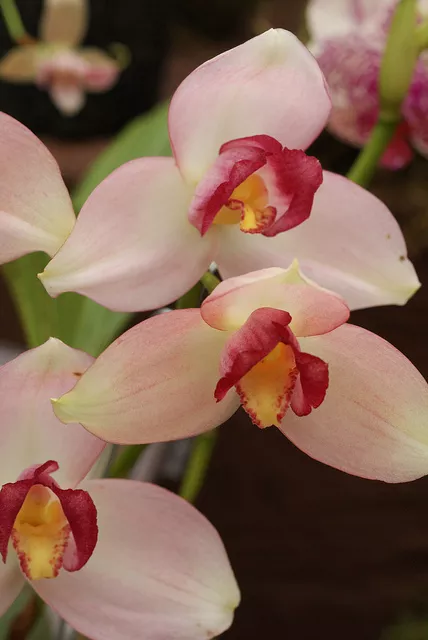

varieties
1.Brassavola Orchid

Brassavola subulifolia Orchi/Wikimedia Commons/CC BY-SA 3.0 If you have a brassavola orchid like this one in your home or garden, you may smell it before you see it. The perfume releases only in the evening and the white color is indicative of many flowers that depend on moths for pollination.
2.Catasetum Orchid

Catasetum Orchid Quinn Dombrow If your Catasetum orchid leaves begin to yellow and drop off, do not despair; this deciduous orchid loses its leaves naturally during winter dormancy. There is much variation in appearance between Catasetum species, but one feature they all have in common is the trait of producing male or female flowers, which bear little resemblance to each other. The male flowers have an anatomical trigger that forcefully ejects pollen onto visiting bees.
3.Cattleya Orchid
Cattleya Orchid Lisle Boomer Cattleya orchids have been widely hybridized, leading to a large variety of colors and forms. Many Cattleya orchids have appealing freckles, streaks, or other bicolor features. Some Cattleya orchids are quite fragrant, and they are the most popular corsage orchid.
4.Cycnoches Orchid
Cycnoches Orchid Elena Gaillard This relative of the Cattleya orchid is also known as the swan orchid, as the elegant inflorescence of male flowers resembles a swan’s neck. As many as 30 spicily scented flowers may grow on one long-lived stem.
5.Cymbidium Orchid
Cymbidium Orchid Juan Barrios Cymbidium orchids may have small flowers compared to some orchid varieties, but their multiple flower spikes ensure a satisfying display. Good choices for beginners include the lime green "Chica," the yellow and red "Showoff," or the bright pink "Frae," which were all recipients of the American Orchid Society’s Highly Commended Certificate.
6.Dendrobium Orchid
Dendrobium Orchid Richard Bitting The top-heavy blooms of the dendrobium orchid often require staking. With more than 1,000 species included in this large orchid genus, the dendrobium orchid defies easy categorization. The most common varieties you will find in the trade feature white, yellow, or lavender blooms.
7.Dendrobium Orchid
Encyclia Orchid
Encyclia Orchid Benson Kua Encyclia orchids, also called cockleshell orchids, thrive when planted on an orchid mount to simulate the epiphytic growing conditions of the wild. Some horticulturists say this orchid looks like an octopus because of its dangling petals and sepals. Although not fragrant, it can bloom for several consecutive months.
8.Epidendrum Orchid
Epidendrum Orchid Christine Cimala The epidendrum genus is large, containing more than 1,000 pure species and many more hybrids. The flowers are petite, and the plants need very bright light to bloom and thrive. Epidendrum growers usually need supplemental growlights when growing these orchids indoors.
9.Ludisia Orchid
Ludisia Orchid cliff1066//Flickr Growing a Ludisia orchid, the jewel orchid, is rewarding in that the plants look attractive in or out of bloom. The plants bear many stems of tiny white flowers in the fall and winter.
10.Lycaste Orchid

Lycaste Orchid Elena Gaillard The Lycaste orchid, like the "Sandra Dayan" variety pictured, is a deciduous orchid that naturally sheds its leaves during winter dormancy. This reveals spines on the tips of the pseudobulbs, which are sharp enough to draw blood from unsuspecting admirers. The flowers are usually white, pink, red, or lavender.
11.Masdevallia Orchid
Masdevallia Orchid flickr user rduta The summer blooming Masdevallia orchid has an atypical flower shape compared to other orchid genera. The flowers are triangular, and while some are blocky and compact, others are thin, elongated, and whiskery. This orchid is very particular about temperature and humidity conditions and is best for advanced orchid growers.
12.Miltonia Orchid
Miltonia Orchid highlimitzz//Flickr It is easy to see how the pansy orchid got its nickname. The blossoms sport the same face-like features that give our favorite cold weather annual so much personality. However, unlike pansies, the Miltonia orchid continues blooming from late spring into summer.
13.Oncidium Orchid
Oncidium Orchid Luis Perez If your orchid resembles a dancing lady, chances are you are tending an oncidium orchid. This low-care orchid includes the popular "Sharry Baby," which emits a sweet cocoa fragrance. These orchids need consistent moisture and humidity. Failure to meet this requirement results in leaf deformities.
14.Paphiopedlium Orchid
Lady's Slipper Orchid David Eickhoff The lady’s slipper orchid is an easy houseplant for the beginning orchid enthusiast. Flowers range from cheerful yellow, pink, or white shades to moody burgundies, browns, and near-black shades. Freckles, stripes, and bristly hairs are common features on these unusual flowers. As a bonus, some plants have speckled foliage as well.
15.Phaius Orchid
Phaius Orchid Nico Nelson If you have a phaius orchid in your collection, you will quickly find out that the four-foot specimens do not belong on a windowsill. The leaves are large and strappy, and the many flower spikes may produce purple, white, or yellow flowers. This winter bloomer also goes by the common name nun’s cap orchid.
16.Phalaenopsis Orchid
Moth Orchid flickr user Tracie7779 Some orchids can be tough to pronounce, like phalaenopsis, which fortunately goes by the common name, moth orchid. This orchid is ideal for beginners, tolerates clumsy repotting efforts, and blooms on and off throughout the year.
17.Phragmipedium Orchid

Phragmipedium Orchid Rosita Choque If you cannot stop yourself from watering your orchids (to death), phragmipedium is the type for you. It is different from other orchids in that it thrives in wet conditions, even preferring wet feet. You can recognize these flowers by the little pouch flanked by Fu Manchu mustache petals.
18.Psychopsis Orchid
Butterfly Orchid Christine Cimala Psychopsis or butterfly orchid should be more popular than it is. It is easy to grow, has fascinating flowers, and showy burgundy and green speckled foliage. Grow these in moderate light for months of blooms.
19.Vanda Orchid
Vanda Orchid Maja Dumat Vanda orchids are as exotic as their name. You will often see them growing in special orchid baskets; otherwise, you must use a very chunky growing medium for these plants. These orchids are picky about their environment and demand high light and humidity. How to Grow Vanda Orchids
20.Zygopetalum Orchid
Zygopetalum Orchid Rictor Norton and David Allen Happy Zygopetalum orchids produce fragrant blooms almost constantly from fall to spring, making gardeners feel like they are cheating winter. The flowers often sport handsome veining and spotting of chartreuse, purple, and maroon.